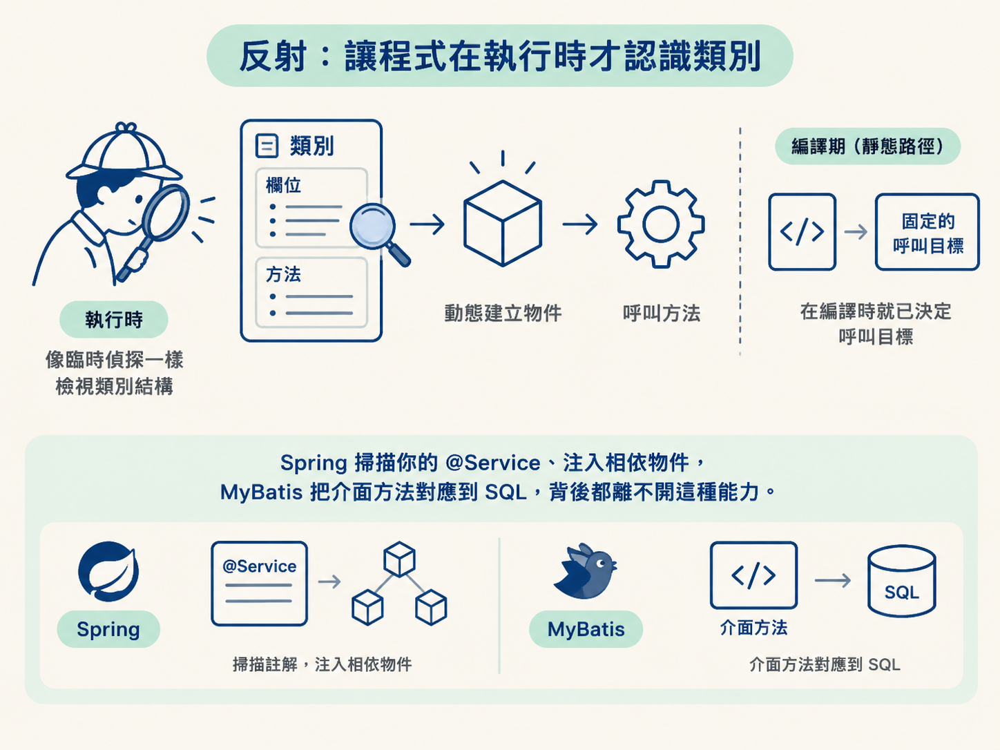
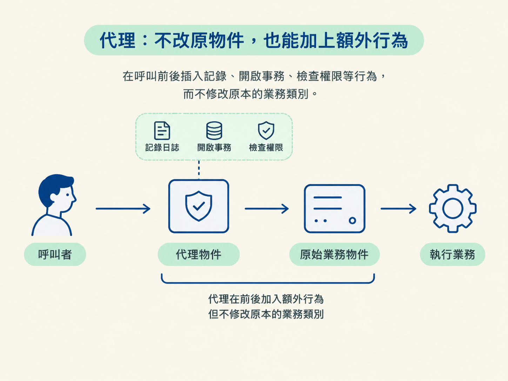
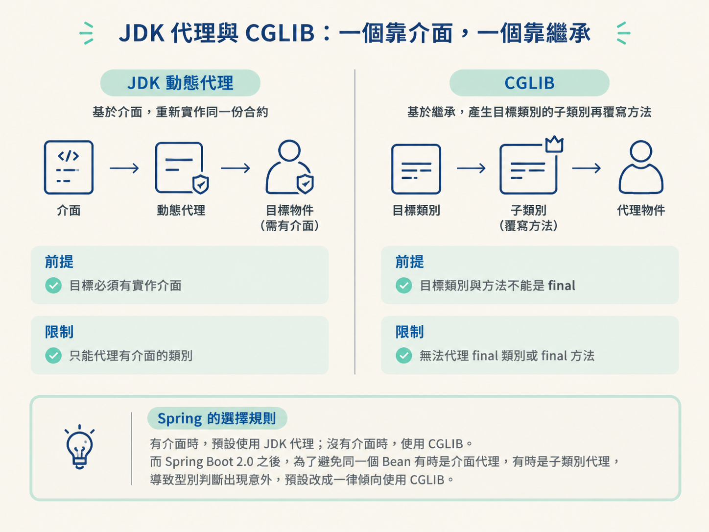
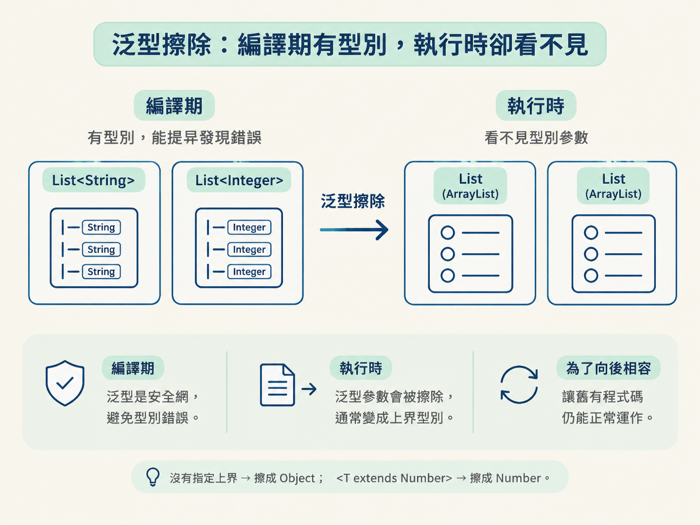
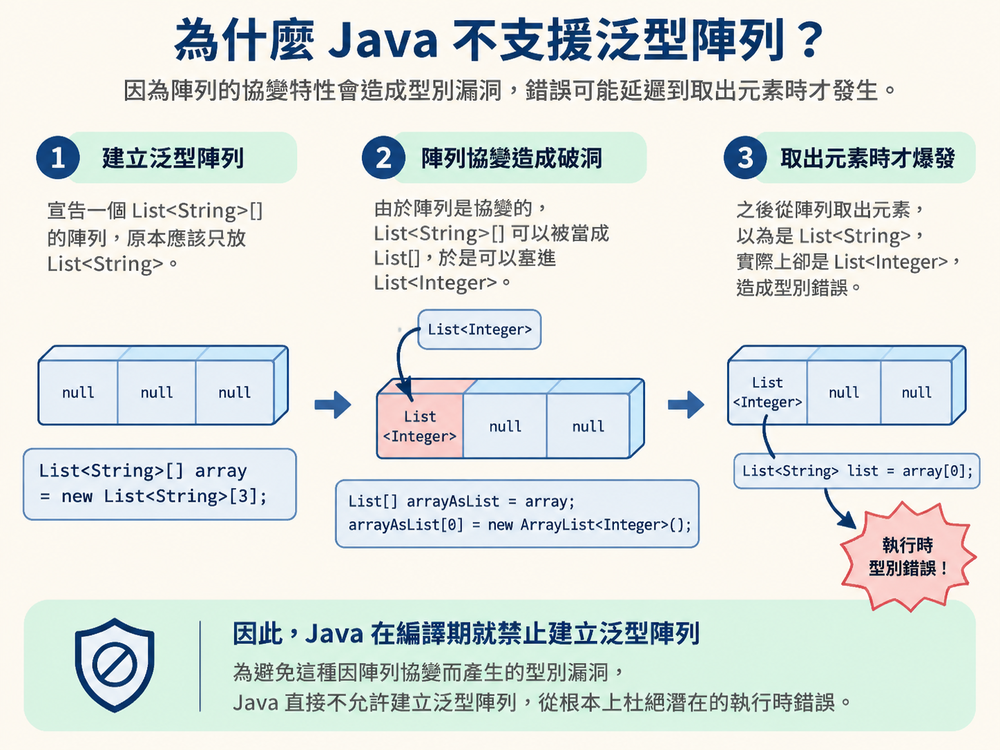

一般寫程式時，類別和方法在編譯期就決定好了，編譯器知道你要呼叫誰。反射則像是把程式變成一位臨時偵探：到了執行時，才去查詢「這個類別有哪些欄位和方法」，再依查到的結果建立物件、呼叫方法。
Spring 掃描你的 @Service、注入相依物件，MyBatis 把介面方法對應到 SQL，背後都離不開這種能力。

Class<?> clazz = Class.forName("com.demo.User");
Object instance = clazz.getDeclaredConstructor().newInstance();
Method setName = clazz.getMethod("setName", String.class);
setName.invoke(instance, "Amy");代價也很直接：反射比直接呼叫慢。方法必須在執行時解析，呼叫時還可能經過存取權限檢查；參數常需要裝箱，而這種高度動態的呼叫點也不利於 JIT 內聯最佳化。
要改善效能，就要對準這些成本下手：快取 Method 物件、用 setAccessible(true) 略過部分檢查、改用 MethodHandle，或乾脆透過字節碼生成，例如 CGLIB、ASM，在執行時產生更接近直接呼叫的類別。
代理（Proxy）解決的是另一個常見問題：你想在原物件前後加上記錄日誌、開啟事務或檢查權限，卻不想把這些邏輯硬塞進原本的業務類別。

最直覺的做法是靜態代理：在編譯前就手寫一個代理類別。
interface UserService {
void save();
}
class UserServiceImpl implements UserService {
public void save() { System.out.println("save"); }
}
class UserServiceProxy implements UserService {
private final UserService target;
UserServiceProxy(UserService target) { this.target = target; }
public void save() {
System.out.println("before"); // 增強
target.save();
System.out.println("after");
}
}小型範例沒問題，但如果每個介面、每個方法都要手寫一份代理，類別數量很快就會失控。這就是動態代理出場的原因：你只提供「要額外做什麼」，代理類別交給框架在執行時產生。
兩者都能幫物件加上額外邏輯，但產生代理的方式不同。JDK 動態代理像是「找一個人重新實作同一份合約」；CGLIB 則像是「產生目標類別的子類別，再覆寫方法」。
| JDK 動態代理 | CGLIB 動態代理 | |
|---|---|---|
| 底層方式 | 基於介面，實現同樣的介面 | 基於繼承，產生目標類別的子類別 |
| 前提 | 目標必須有介面 | 目標類別與方法不能是 final |
| 限制 | 只能代理介面中宣告的方法 | 無法代理 final 方法 |
| 產生速度 | 較快 | 較慢 |
| 呼叫效能 | 較慢（反射呼叫） | 較快（直接呼叫子類別方法） |
Spring 的傳統選擇規則是：目標有實作介面時，預設使用 JDK 代理；沒有介面時，使用 CGLIB。不過 Spring Boot 2.0 之後，為了避免同一個 Bean 有時是介面代理、有時是子類別代理，導致型別判斷出現意外，預設改成一律傾向使用 CGLIB。

這就是 AOP 的底層樣子：你寫在 @Around 裡的增強邏輯，最後會掛到這個執行時生成的代理物件上。
泛型主要是編譯期的安全網：它能提早擋住型別錯誤。但這些泛型資訊不會完整保留到執行時。編譯器會把泛型參數擦除成它的上界；沒有指定上界，就擦成 Object；如果寫的是 <T extends Number>，就擦成 Number。

List<String> list = new ArrayList<>();
List<Integer> list2 = new ArrayList<>();
System.out.println(list.getClass() == list2.getClass()); // true，都是 ArrayList為什麼不把泛型完整放進執行環境？關鍵在向後相容。泛型是 Java 5 才加入的；如果泛型資訊改變了位元組碼格式，舊版類別庫和執行環境就可能無法與新程式碼一起工作。擦除讓新舊程式碼仍能共存。
答案可以從陣列和泛型的個性差異看出來。
陣列是「具體化」的：執行時知道自己的元素型別，而且支援協變，例如 Object[] 可以指向 String[]。泛型則在執行時被擦除。如果把兩種規則疊在一起，就可能留下型別漏洞。
例如，宣告成 List<String>[] 的陣列，可能先被當成 List[]，再塞進一個 List<Integer>。錯誤不會在塞入的當下被完整攔住，直到之後取出元素才爆炸。

為了堵住這個洞，Java 在編譯期就禁止建立泛型陣列。日常如果要做「裝泛型的容器」，使用 List<List<String>> 這類集合，別用陣列硬湊。
反射和註解經常一起出現，但註解本身不會自動產生行為。它比較像貼在程式碼上的標籤，也就是元數據；必須由編譯器或反射機制讀取，標籤才會真正發揮作用。
其中，只有標註 @Retention(RUNTIME) 的註解，才能在執行時被反射讀到。Spring 的 @Service、MyBatis 的 @Mapper 都屬於這類。沒有執行時讀取這一步，註解再漂亮，也只是一張貼紙。
反射讓程式在執行時才認識類別並動態呼叫，代價是效能較差；常見優化方式包括快取、略過部分檢查，以及生成字節碼。動態代理則讓框架能在執行時製造「加強版」物件：JDK 代理依賴介面，CGLIB 依賴繼承。
泛型擦除是為了維持 Java 的向後相容，也因此讓泛型資訊在執行時消失；當它和陣列的具體型別、協變規則放在一起時，容易形成型別漏洞，這正是 Java 禁止泛型陣列的原因。